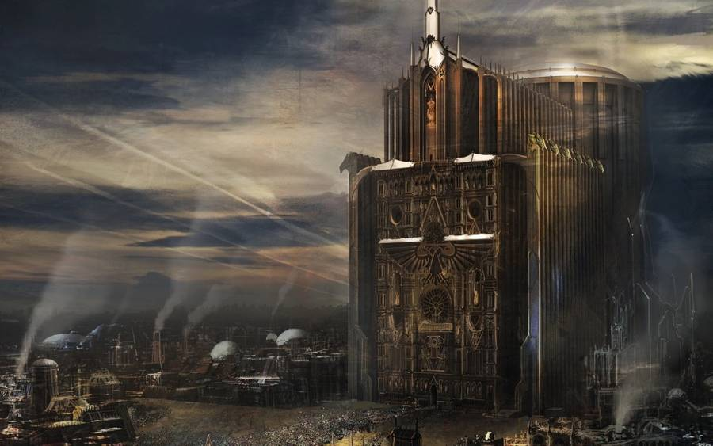

Ecclesiarchal Palace
| Ecclesiarchal Palace | |
|---|---|
| Seat of the Ecclesiarch | |
 A great cathedral of the Ministorum on Terra, of the style of the Ecclesiarchal Palace | |
| Location | Terra, near the Imperial Palace |
| Type | Fortified palace, cathedral and administrative complex the size of a continent |
| Occupant | The Ecclesiarch and the Holy Synod of the Adeptus Ministorum |
| Current holder | Eos Ritira (since c. 000.M42) |
| Founded | Early M32 (estimated) |
| Seat vacant | c. 200 – c. 300.M34, while the seat stood on Ophelia VII |
| Guard | Frateris militia; since M36 the Adepta Sororitas |
| Notable events | |
| Poisoning of Erekart Mesring (c. 545.M32); destruction by the debris of the Attack Moon (546.M32); Reign of Blood (c. 218–288.M36); siege of the Palace and death of Goge Vandire (c. 288.M36) | |
The Ecclesiarchal Palace is the seat of the Ecclesiarch, the head of the Adeptus Ministorum, on Terra. It is a fortified complex of cathedrals, chapels, libraries, scriptoria and offices so large that Imperial accounts describe it as the size of a continent. The Holy Synod of Cardinals meets there to elect each new Ecclesiarch, and from it the Ministorum directs its priests, missionaries and shrine worlds across the Imperium.[1][2]
The Palace has been the scene of some of the darkest events in the history of the church. It was destroyed in 546.M32 at the end of the War of the Beast and rebuilt. In the 36th millennium it was the stronghold of Goge Vandire during the Reign of Blood, and the siege that ended his rule, about 288.M36, gave rise to the Adepta Sororitas.[1][3]
History
[edit]Foundation
[edit]The Ministorum grew from the Temple of the Saviour Emperor, which the High Lords of Terra recognised as the state religion in the early 32nd millennium. The first Ecclesiarchs built their seat on Terra close to the Imperial Palace, and by the middle of the millennium, when Veneris II took his seat among the High Lords, the Ecclesiarchal Palace had become one of the great buildings of the Throneworld.[1][a]
War of the Beast
[edit]During the War of the Beast of 544–546.M32 the Ecclesiarch was Erekart Mesring, an ally of the Lord High Admiral Lansung. The Grand Master of Assassins Drakan Vangorich got into the Ecclesiarchal Palace and poisoned Mesring, promising him the antidote if he declared a War of Faith against the Orks. When the Ork Attack Moon in orbit above Terra was shattered in 546.M32, its debris fell on the planet and destroyed the Palace. Mesring was found in the rubble days later, still alive but losing his mind. He was shot for heresy before the High Lords later that year, and the Palace was rebuilt under his successors.[4][1][b]
The move to Ophelia VII
[edit]About 200.M34 the Ecclesiarch Benedin IV moved the seat of the church from Terra to the shrine world of Ophelia VII, partly to put distance between himself and the Senatorum Imperialis. The Ecclesiarchal Palace was left to decay, its great wings empty and silent. About 300.M34 the Ecclesiarch Greigor XI ordered the return to Terra, and the Palace was restored.[1]
Reign of Blood
[edit]In the early 36th millennium the High Lord Goge Vandire, Master of the Administratum, made himself master of the church as well. About 218.M36, when confidence in the Ecclesiarch Paulis III collapsed, Vandire forced his way into the Ecclesiarchal Palace with his retainers, killed the Ecclesiarch and those who tried to stop him, and took the office himself. He ruled from the Palace for some seventy years. His bodyguard there was the Daughters of the Emperor, a sisterhood from the world of San Leor whom he renamed the Brides of the Emperor.[3][1]
About 288.M36 a crusade raised by the preacher Sebastian Thor, with forces of the Adeptus Mechanicus and the Adeptus Astartes, reached Terra. A strike force of the Imperial Fists, the Black Templars and other Chapters attacked the Ecclesiarchal Palace, and its drop-pod assault was checked by the Brides, who fought to the last. The siege lasted months. It was broken when the Black Templars' Emperor's Champion, Navarre, carried the Chapter's banner into a breach. In the end the Adeptus Custodes took the Brides' leader, Alicia Dominica, to the Emperor. When she returned to the Palace she denounced Vandire and beheaded him.[3][1]
Later history
[edit]After the Reign of Blood, Sebastian Thor was elected Ecclesiarch in the Palace, and under the Decree Passive the Brides became the Adepta Sororitas, whose orders have guarded the Palace since. Thor ruled until his death in 350.M36. In the Era Indomitus, after the return of Roboute Guilliman in 999.M41, the Ecclesiarch Baldo Slyst was deposed, and about 000.M42 Eos Ritira took the seat.[1][5]
Description
[edit]The Palace is a city of spires and domes, many of them a kilometre or more high, built in successive styles over ten thousand years. It holds the Synod Hall, the private chapels and treasuries of the Ecclesiarch, the archives of the Ministorum and the relics of many saints. Its defences are those of a fortress, and its garrison is drawn from the Frateris militia and the orders of the Adepta Sororitas.[1][2]
Timeline
[edit]| Date | Event |
|---|---|
| Early M32 (estimated) | Ecclesiarchal Palace founded on Terra |
| c. 545.M32 (estimated) | Vangorich poisons Mesring in the Palace |
| 546.M32 | Palace destroyed by the debris of the Attack Moon; Mesring killed |
| c. 200.M34 | Seat moved to Ophelia VII; the Palace decays |
| c. 300.M34 | Return to Terra ordered |
| c. 218.M36 | Vandire seizes the Palace and the office of Ecclesiarch |
| c. 288.M36 | Siege of the Ecclesiarchal Palace; Vandire beheaded |
| c. 000.M42 | Eos Ritira becomes Ecclesiarch |
See also
[edit]Notes
[edit]References
[edit]- ^ a b c d e f g h i Liber Ecclesiasticus (M37). Adeptus Ministorum.
- ^ a b Codex Imperialis (rev. 980.M41). Adeptus Terra.
- ^ a b c Chronicles of the Age of Apostasy (M37). Adeptus Ministorum, Terra.
- ^ Proceedings of the Senatorum Imperialis, 544–646.M32 (sealed). Senatorum Imperialis.
- ^ Records of the Indomitus Crusade (ongoing). Office of the Lord Commander.